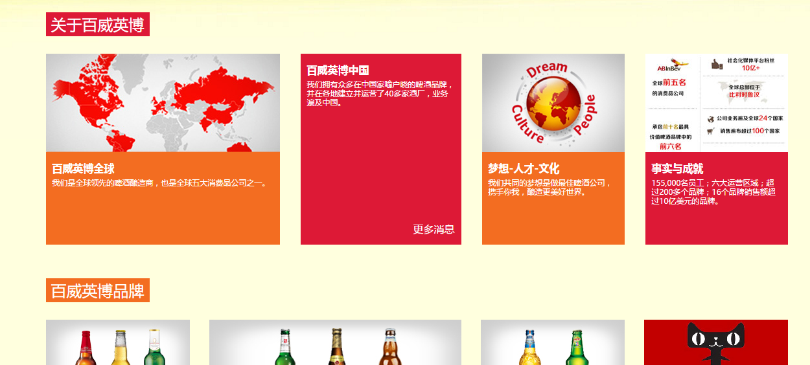
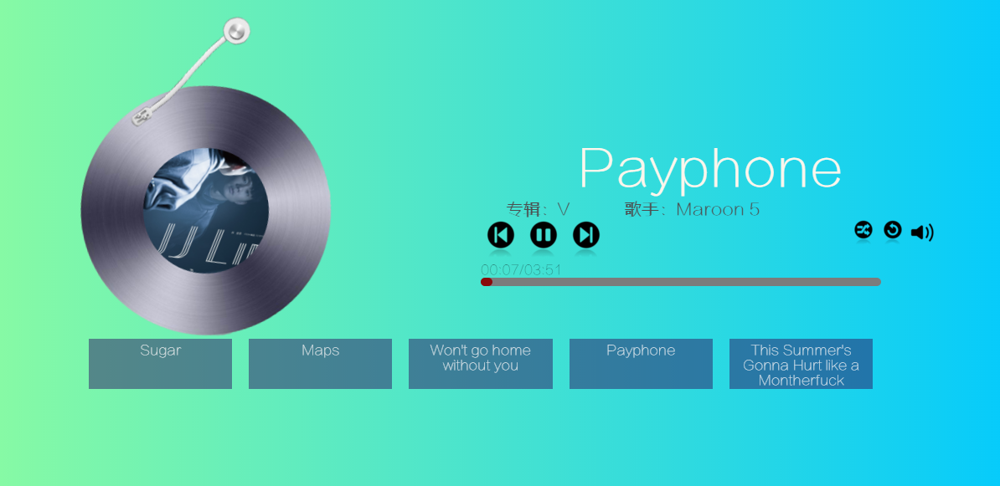
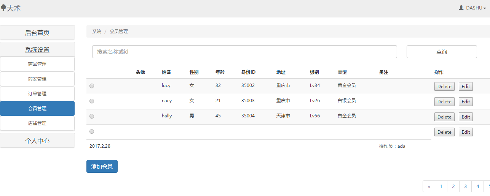

-
- Basic info. 基本信息
- 个人信息: 吴术兵 / 男 / 20岁
- 英语水平: CET-4
- 常用ID: dashu
- GitHub: github.com/wushubing
-
- Experience. 项目与工作经验
百威英博南通大富豪啤酒有限公司 (2015.7 - 2015.12)
-
参与项目
参与公司页面改版制作，协助前端开发人员维护页面，对页面bug的反馈与修复；参加公司啤酒节相关宣传页面的制作，图片的制作等；
使用 Html css javascript制作简单的页面，完成页面的静态布局和简单效果。

去哪儿网(合肥)运营实习生 (2016.2 - 2016.12)
-
MusicPlayer（2016.4） 源代码 Demo
纯原生js制做音乐播放器，功能完善，特效精仿网易云音乐，这是我自学原生js入门后的一个作品。
 -
dashu的个人网站（2016.2 - 至今） 源代码 Demo
基于Jekyll制作，使用github提供的免费主机搭建，但整体内容布局等均为原创。目前依然更新中。

-
电商网站后台管理系统（2016.8 - 2016.9） 源代码
使用vue+jQuery+echarts.js制作，实现商品增删改查、分页等基础效果的同时，通过php实现与mysql数据库的数据交互，对数据库的基本使用等。
 -
DA SHU 个人简历（2016.8 - 至今） 源代码 Demo
设计优雅、内容完善的静态简历页面，可以用浏览器直接生成合适尺寸的PDF，使用 Gulp 改进工作流，源码fork自DIYgod，后精心改版重置

-
jCarrousel（2015.8） 源代码 Demo
一个3D轮播图 jQuery 插件，实现了3D轮播效果，可以自适应宽度、自适应图片数量，有方便的切换按钮，另外实现了播放、停止、切换到任意一张图片的API

-
Do-you-like-me（2015.9） 源代码 Demo
一个简单有趣的 UI 点赞组件，后端使用 NodeJS + MongoDB 实现，用 mongoose 操作 MongoDB，实现了对 MongoDB 数据库简单的增删查改

-
- Skill. 技能清单
Web前端
-
HTML / CSS
能够编写语义化的 HTML，模块化的 CSS，完成较复杂的布局
熟悉 Less / Sass 等CSS预处理和后处理方法、工具
-
JavaScript
熟悉原生Javascript，能脱离jQuery等类库编码
能运用模块化、面向对象的方式编程
了解 jQuery AngularJS vue.js react.js Node.js的使用
-
其他
熟悉 Webpack Grunt Gulp 前端自动化工具
了解前端安全、性能优化方面的一些知识
后端
-
环境
熟悉 Linux 开发环境、 Linux 服务器环境搭建部署
了解 Apache Nginx web服务器，一年多建站经验
-
语言
了解 Python，能够实现简单的爬虫、数据及图像处理工具、自动化脚本
了解 C，大学期间获得过国家级C语言等级证书
了解 Java，能进行简单的安卓编程
其他
-
是一个有趣的人，涉猎广泛，爱好多元，动静皆宜。
严重强迫症，不能忍受界面一个像素的偏差，同样不能忍受代码格式一个空格的偏差
学习能力强，以上绝大多数的技能都是自学而来
能够熟练使用 Markdown 进行写作

吴术兵的简历
"Talk is cheap,show me the code."
-
- Contact. 联系方式
- 邮箱: dashu9204@hotmail.com
- 微信: love_da_shu
- QQ: 1801278075
-
- Application. 应聘岗位
- 前端工程师
-
- Tech. 技能点
JavaScriptHTMLCSSCPHP
我是一个热爱前端开发、热爱生活、充满热情的前端开发工程师。
我目前正在寻找前端相关岗位，希望借此机会能与贵司共同发展，共同进步！